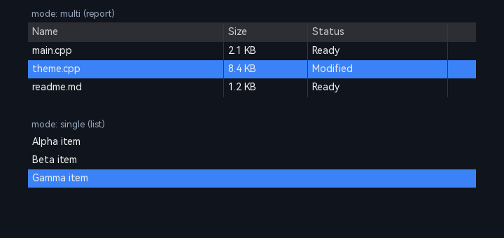

4.12 ListView（列表）
ListView 提供多列详情视图（Report）与单列模式（List，ListBox 替代）：列头/排序/网格线/选中高亮/hover/行列图标/滚动。继承链：ListView → ControlImpl → Control。设计文档见 design/ListView_Design.md。

4.12.1 控件的创建
// C++
auto lv = ListViewBuilder(nullptr, SRect(30, 60, 420, 240))
.addColumn(u8"名称", 180, true).addColumn(u8"大小", 90)
.addRow("f1", {u8"main.cpp", u8"2.1 KB"}).build();
// C ABI
UIControlHandle lv = UICornerstone_CreateListView(g_inst, 30, 60, 420, 240, 1, 1);
UICornerstone_ListViewAddColumn(g_inst, lv, u8"名称", 180, 1);
UICornerstone_ListViewAddRow(g_inst, lv, "f1", 2, cells);
// JSON
{ "type": "list-view", "rect": {"x":30,"y":60,"w":420,"h":240}, "mode": "multi",
"columns": [ {"title": "名称", "width": 180, "sortable": true} ],
"rows": [ {"id": "f1", "cells": ["main.cpp", "2.1 KB"]} ],
"events": { "onSelectionChanged": "onSel" } }4.12.2 控件的属性
| 属性/字段 | 属性常量 | 类型 | 默认值 | 说明 |
|---|---|---|---|---|
font / font-size | kFont / kFontSize | Enum / Int | 继承 | 字体声明 {name,size,style} 或便捷 font-size（属性系统键，C ABI/Binding 可访问）；未声明时沿父控件链继承最近显式字体（默认 HarmonyOS_Sans_SC_Regular / 14，v1.1.1 起支持） |
mode | kMode | Enum | kModeMulti | kModeMulti（Report）/ kModeSingle（ListBox） |
multi-select | kMultiSelect | Bool | true | Ctrl 多选 |
selected-index | kSelectedIndex | Int | -1 | 初始选中行 |
row-height / header-height | kRowHeight / kHeaderHeight | Float | 24 / 28 | 行高/列头高 |
header-text | kHeaderText | Color | (200,200,205) | 列头文字色（控件级；P0-56） |
header-background | kHeaderBackground | Color | (45,45,52) | 列头背景色（控件级；P0-56） |
header-shadow / header-shadow-offset-x/y | kHeaderShadow / kHeaderShadowOffsetX/Y | Color / Float | — / 1,1 | 列头文字阴影（未设色=不绘制；P0-56） |
columns[].header-text/-background/-shadow / header-shadow-offset-x/y | 同上（作用域=该列） | Color/Float | — | per-column 表头样式（稀疏；未设继承控件级；P0-56） |
columns[].header-font-size / header-font-name | Number / String | — | — | per-column 列头字号/字体名（P0-66①；字号 0/缺省=继承控件级，字体名置 hasFontName） |
rows[].cells[] 对象形态 | Object | — | — | 单元格样式（P0-66②）：{text, background-color(串/对象四态 normal+hover), hover-background-color, text-color, font-size, font-name, text-shadow, text-shadow-offset-x/y}；字符串形态保持兼容 |
ListViewSetCellTextColor(lv,row,col,rgba) | API | — | — | 单元格文字色（P0-62①；稀疏——未设继承行/控件级；既有 SetCellStyle 仅设背景不再覆盖文字色） |
ListViewSetCellFontName(lv,row,col,name) / ListViewSetColumnHeaderFontName(lv,col,name) | API | — | — | 单元格/列头字体名（P0-63②③；稀疏——未设继承控件级） |
hover / selected | Color | — | — | 控件级行悬停/选中高亮色（P0-64②，通用键与 TreeView 一致） |
ListViewSetCellHoverBackgroundColor(lv,row,col,rgba) | API | — | — | 单元格显式悬停背景（P0-64③；优先于叠加；selected 优先）。hover-only（未设常态背景）时常态不填、与 SetCellStyle 合并使用常态保留（P0-65①） |
| cell 背景行 hover/选中：以半透明高亮叠加于 cell bg 之上（P0-63①；选中优先 hover、disabled 不叠加）——per-cell 着色与交互反馈并存 | ||||
gridlines | kGridlines | Bool | true / false | 网格线开关 |
hover | kHoverHighlight | Bool | true | hover 高亮 |
min-column-width | kMinColumnWidth | Float | 20 | 列宽拖拽下限 |
cycle-navigation | kCycleNavigation | Bool | true | 键盘上下循环 |
sort-column / sort-ascending | kSortColumn / kSortAscending | Int/Bool | -1 / true | 初始排序状态 |
4.12.3 控件的回调 / 事件
| 事件名 | 事件常量 | 触发时机 | 参数 |
|---|---|---|---|
onSelectionChanged | kEventListSelectionChanged（"list-selection-changed"） | 选中集合变化（setSelectedRow / 点击 / Ctrl 多选） | grid{row=当前行（无选中 -1）, col=选中数} |
onItemClick | kEventItemClick（"item-click"） | 数据区行点击 | grid{row, col} |
onColumnSort | kEventColumnSort（"column-sort"） | 列头排序点击（可排序列） | grid{row=列索引, col=升序 1 / 降序 0} |
4.12.4 leadingControl
列头图标（setColumnLeadingControl）、行首图标（setRowLeadingControl）、单元格控件（setCellLeadingControl）——任意控件，自动挂树定位。
4.12.4.1 item（行级）属性（item-id 定位模式）
先 SetString("item-id", 行id) 定位目标行，随后 set/get 作用于该行；样式优先级 cell（CellStyle）> item（行）> 控件级。
| 属性 | 属性常量 | 类型 | 说明 |
|---|---|---|---|
item-background / item-border / item-text / item-text-shadow | kItemBackground / kItemBorder / kItemText / kTreeItemTextShadow | StateColor | 行级四态色（normal/hover/pressed/disabled） |
item-shadow / item-shadow-offset-x / item-shadow-offset-y | kItemShadow / kTreeItemShadowOffsetX / kTreeItemShadowOffsetY | Bool / Float | 行级阴影开关与偏移 |
item-border-visible / item-disabled | kItemBorderVisible / kItemDisabled | Bool | 行边框可见 / 行禁用（disabled 态可达） |
4.12.5 JSON 语法
{
"type": "list-view", "id": "lv", "rect": { "x": 30, "y": 60, "w": 420, "h": 240 },
"mode": "multi", "multi-select": true, "selected-index": 0,
"row-height": 28, "header-height": 28, "gridlines": true, "hover": true,
"columns": [
{ "title": "名称", "width": 180, "sortable": true, "icon": "provider:icons/name" },
{ "title": "大小", "width": 80, "sortable": true }
],
"rows": [
{ "id": "f1", "cells": ["main.cpp", "2.1 KB"], "icon": "provider:icons/file",
"cellControls": [ { "col": 1, "control": { "type": "check-box" } } ] }
],
"events": { "onSelectionChanged": "onSel", "onColumnSort": "onSort" }
}4.12.6 C++ Binding 样例
auto lv = ui->CreateListView(30, 60, 420, 240);
lv.SetEnum(PropertyNames::kMode, "multi");
lv.SetFloat(PropertyNames::kRowHeight, 28);
lv.SetCallback(PropertyNames::kEventSelectionChanged, onSel);4.12.7 C ABI 调用样例
UIControlHandle lv = UICornerstone_CreateListView(g_inst, 30, 60, 420, 240, 1.0f, 1.0f);
UICornerstone_ListViewAddColumn(g_inst, lv, u8"名称", 180, 1);
const char* cells[] = { u8"main.cpp", u8"2.1 KB" };
UICornerstone_ListViewAddRow(g_inst, lv, "f1", 2, cells);
UICornerstone_SetInt(g_inst, lv, "selected-index", 0);